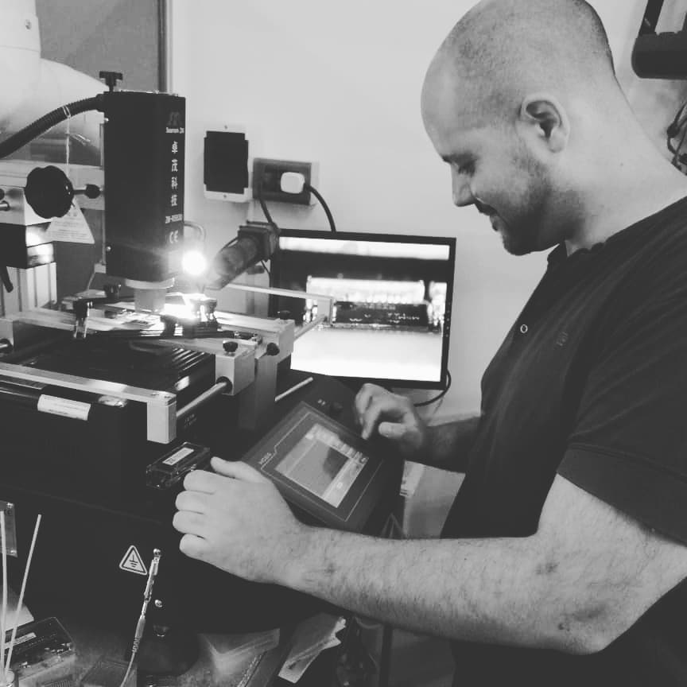

RB Lab surge de un lugar muy personal...
De la necesidad de que cambiara drasticamente
el enfoque de trabajo como tecnico, luego de 20 años, en donde el camino se habia vuelto monotono
y la capacidad de resolucion en el ambito electronico tenia
las limitaciones de cualquier
local informatico.
